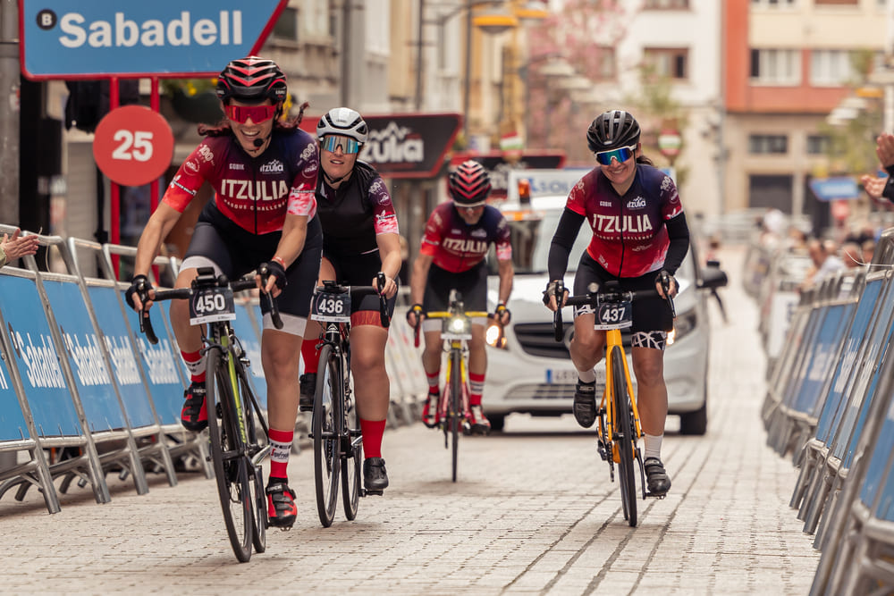
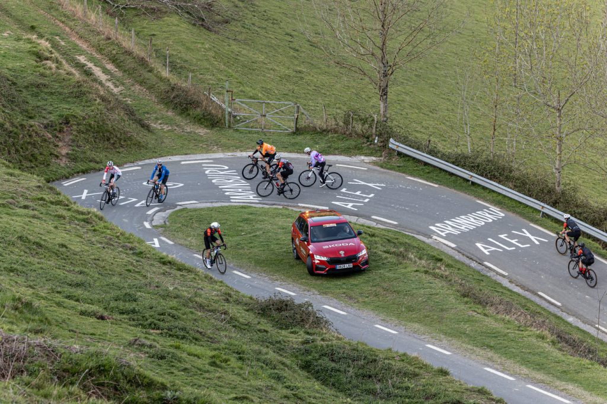
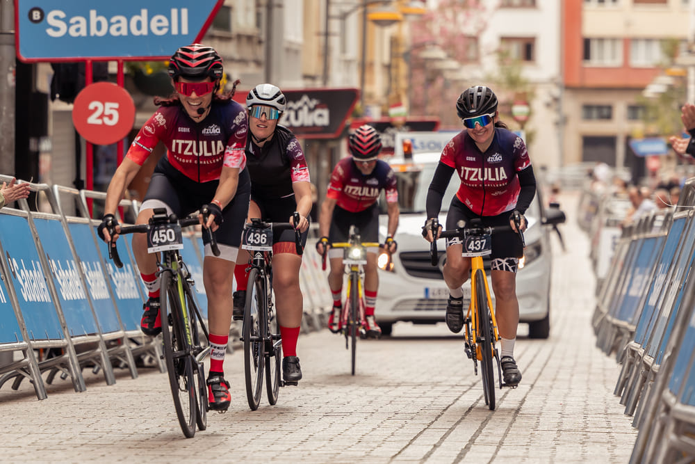
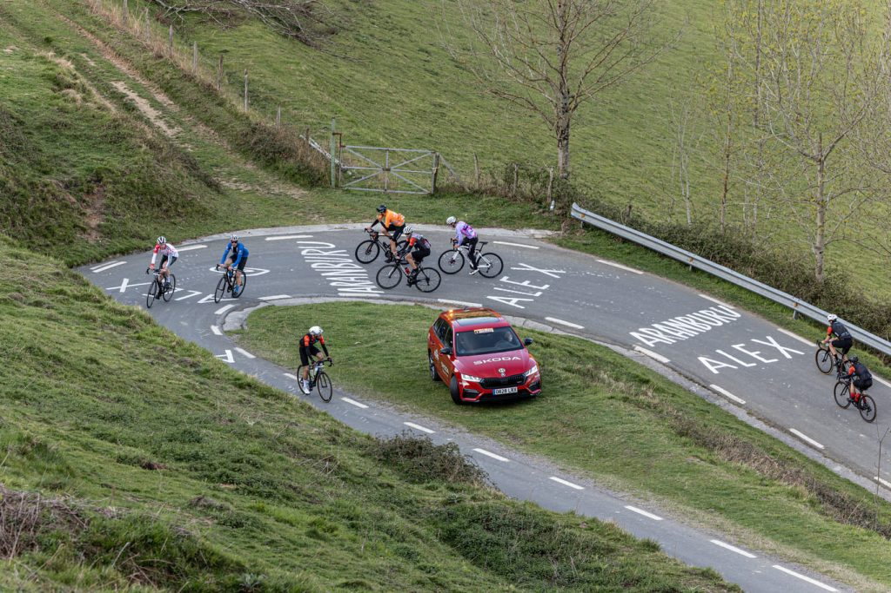
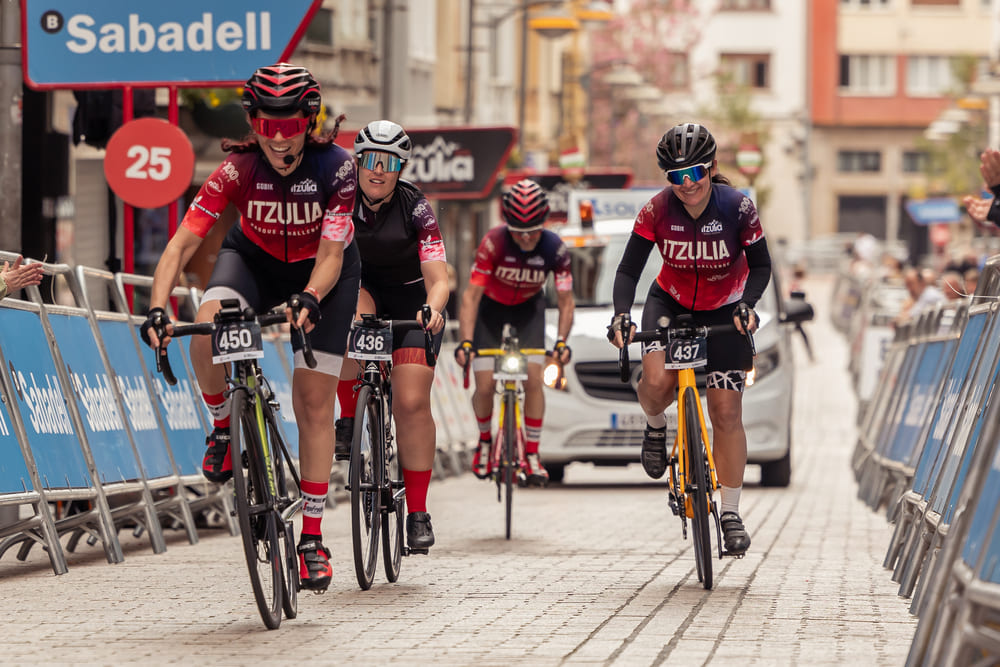
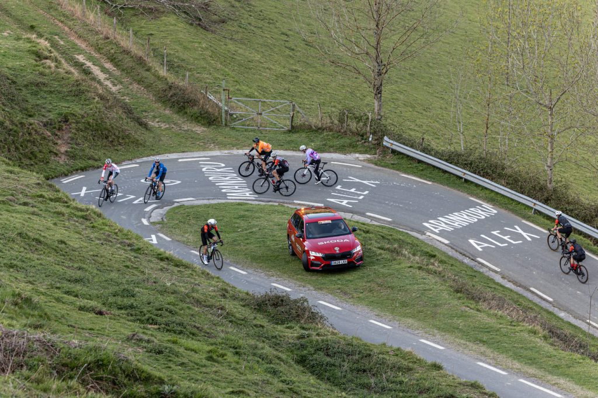

La Itzulia Basque Challenge es la marcha cicloturista oficial de la Vuelta al País Vasco, donde podrás recorrer las mismas carreteras que los grandes del pelotón. Una experiencia única que combina paisajes espectaculares, un ambiente inigualable y el verdadero espíritu del ciclismo.
No importa si eres un ciclista experimentado o simplemente un apasionado de la bici: este reto es para todos los que quieran disfrutar de un día inolvidable sobre dos ruedas.

